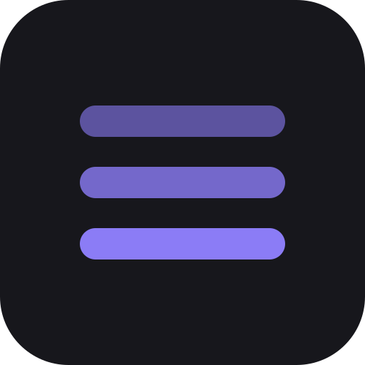

Chord Trainer
Hear and name chords beyond plain triads: 7ths, sus and add chords, extensions and altered dominants, with inversions. Puzzle, training and “imagine” modes, plus a progression sketchpad to loop ideas like Em9 | A13 | Cmaj7#11.